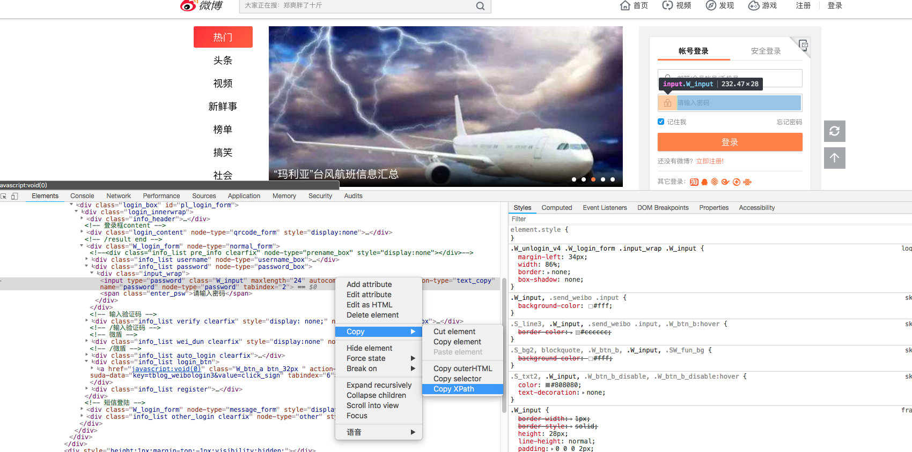
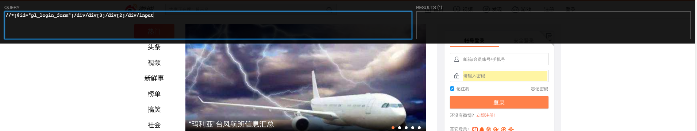

XPath
XPath即为XML路径语言（XML Path Language），它是一种用来确定XML文档中某部分位置的语言。
XPath基于XML的树状结构，提供在数据结构树中找寻节点的能力，很快的被开发者采用来当作小型查询语言。
上面是维基百科对XPath的介绍，其实XPath现在经常被用作节点获取，就像HTML中通过#id,.class来获取元素一样。
XPath示例
从Chrome中获取元素的XPath
也许你对XPath还没什么概念，跟着我的思路你会恍然大悟。打开chrome，输入http://weibo.com/，等待页面加载完成后，点击鼠标右键，然后点击检查，打开chrome调试窗口，选中输入密码的输入框，然后，在Elementstab中右键元素，Copy > Copy XPath

可以看到，复制出了//*[@id="pl_login_form"]/div/div[3]/div[2]/div/input，这个就是定位密码输入框的XPath，看着还挺复杂，没关系，我们后边儿会介绍分解每一部分。
验证XPath
这一步需要安装xpath-helper这个Chrome扩展，通过它，我们可以直观的看到XPath选中的元素有哪些，安装好之后打开，浏览器顶部会出现交互框，在QUERY栏目中输入//*[@id="pl_login_form"]/div/div[3]/div[2]/div/input，我们会发现密码输入框被定位到了，定位结果只有一个。

XPath详解
基本语法
/单斜线选择器
/{node} 从当前上下文中，匹配所有node节点，node必须是当前上下文中的第一层。这个怎么理解呢，比如一个网页，/html就匹配了，整个网页，而/body是匹配不到任何东西的。/html/body是可以匹配到body下的所有子元素的，但/html/div是匹配不到任何内容的，因为当前上下文环境是/html，他下面的第一层只有body，没有div。
//双斜线选择器
//{node} 从当前上下文中，匹配所有node节点，不管节点在当前上下文的深度。就像//body，我们是可以获取到内容的，/html//div[@id="pl_login_form"]//div会匹配，html下面id=pl_login_form的元素下面的div。
@属性选择器
@attrName 选取属性为attrName的属性值。/html//div[@id="pl_login_form"]/@id 就会匹配到pl_login_form，正是这个元素的id。
谓语
谓语用来查找某个特定的节点或者包含某个指定的值的节点，被嵌在方括号中。谓语分好多种情况，比如通过节点属性作为谓语，通过元素顺序作为谓语，通过元素子元素作为谓语等等，具体情况可能回事[@id="idval"]、[@lang="zh"]、[last()]、[position() > 2]……，这些都是为方便我们快速定位到想要的元素。比如/html//div[@id="pl_login_form"]，是对/html//div做了个谓语修饰，额外要求，选中的div中要有属性id=pl_login_form。除了这些之外还有很多函数可以再谓语中使用，比如[not()]、[contains()]等等，具体可以看https://zh.wikipedia.org/wiki/XPath。
通配符
在XPath中，也是可以使用通配符的，//*中的*表示表示匹配所有节点。//*[@*]中的@*表示谓语条件，匹配所有带属性的节点。
多条件选取
组织XPath的时候还可以用多组XPath组成一个大的XPath，比如/html | /html/body会选取节点html和节点body。
实例
下面的例子都基于下面这段html1
2
3
4
5
6
7
8
9
10
11
12
13
14
15
16
17
18
19
20
21
22
23
24
25
26
27
28
29
30
31
32
33
34
35
36
37
<html lang="en">
<head>
<meta charset="UTF-8">
<title>建立测试网址文本</title>
</head>
<body>
<div id="content" version="1.0">
<ul id="useful">
<li>数学建模方法</li>
<li>数学建模数据</li>
<li>数学建模软件</li>
</ul>
<ul id="useless">
<li>不需要的信息１</li>
<li>不需要的信息２</li>
<li>不需要的信息３</li>
</ul>
<book>
<title lang="eng">数学建模书籍1</title>
<price>29.99</price>
<what>
<author>Liam Yan</author>
</what>
</book>
<book>
<title lang="eng">数学建模书籍2</title>
<price>39.95</price>
<author>Liam Yan</author>
</book>
<div id="url">
<a href="http:nveyun.com">虐云建模网</a>
<a href="http://nveyun.com/forum.php" title="虐云建模论坛">建模论坛</a>
</div>
</div>
</body>
</html>
各种情况
1 | from lxml import etree |
selector.xpath('/body')获取不到任何内容。selector.xpath('//div[@id]')获取到两个包含id属性的div块。selector.xpath('//*[@id="url"]')从所有元素中选择id等于url的元素。selector.xpath('/*/*/*/*[@id]')从根元素开始往下数四层，从里面选择包含id属性的元素。selector.xpath('/*/*/*/*[@id][2]/@id')从根元素开始往下数四层，从里面选择包含id属性的元素，然后选取第二个，获取他的id属性。selector.xpath('/*/*/*/*[@id][position()>=2]')从根元素开始往下数四层，从里面选择包含id属性的元素，单后选择索引从2开始的元素。selector.xpath('//book[author]')选取所有book节点，然后筛选其中有直接子节点author的，这里会选中第二个book节点。selector.xpath('//book[price>30]/author')选取所有book节点，然后筛选其中有直接子节点price并且值大于30的，接着从book下一层获取author子节点。selector.xpath('//book[price>30]/author | //ul')除了选取8中的节点外，还要并列加上所有ul节点。selector.xpath('//*[not(@*)]')匹配所有不带属性的节点。selector.xpath('//*[contains(@version,"1.0")]')匹配带有属性version并且值中包含1.0的节点
总结
至此，基本对XPath的情况了解了，也会使用了，他跟CSS是类似的，都可以用作定位元素，做爬虫的时候，定位元素又多了种途径，是不是很激动呢。
- 本文链接：http://www.5aikid.com/2018/07/11/XPath/
- 版权声明：The author owns the copyright, please indicate the source reproduced
分享